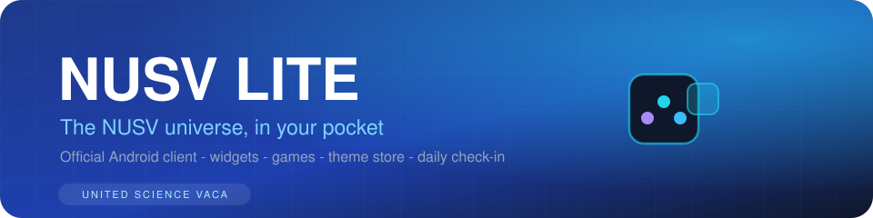

NUSV LITE — technical documentation
The official NUSV Android client. Jetpack Compose + Material 3, Room-backed content store, and a versioned sync pipeline that keeps the app's content fresh without app updates.
01 Stack & targets
| Item | Detail |
|---|---|
| Target | Android only — minSdk 26 (Android 8.0), target/compile SDK 36 |
| UI | Jetpack Compose (BOM 2026.06.00) + Material 3 + material-icons-extended |
| Persistence | Room 2.8.4 (via KSP) — categories / items / docs tables |
| Network | OkHttp (content sync, update check) |
| Serialization | kotlinx.serialization (JSON, ignoreUnknownKeys) |
| Navigation | androidx.navigation-compose 2.9.8; lifecycle-viewmodel-compose 2.10.0 |
| Release build | R8 minification (isMinifyEnabled) with a custom proguard-rules.pro |
| License | MIT |
02 Architecture & code map
Single app module with the classic layer split. UI is plain Compose (no ViewModels for the games/tools — state is local to each screen); the content hub goes through Room-backed repositories.
03 Content pipeline (offline → sync)
Content flows in two stages, so the app is fully usable offline and only downloads what changed:
- Seeding (first launch): ContentLoader.loadIfNeeded() reads bundled assets content.json and docs.json from the APK and inserts them into Room (skipped if the tables already have rows).
- Sync (on demand): SyncManager.syncAll() fetches the same files from a remote base URL. Each file carries an integer version; the app stores the last applied version in SharedPreferences("sync_meta") and only replaces its DB rows when remote.version > localVersion. The default base URL is raw.githubusercontent.com/NUSV/nusv-lite-sync/main and can be overridden per-install in settings.
- Update check: the same sync URL serves version.json (UpdateInfo { latestVersion, downloadUrl, changelog }); the Detail screen shows an update action when the remote version is newer.
The versioned replace strategy means sync is destructive but atomic per file: categories/items are wiped and re-inserted in one transaction per successful fetch. Errors (timeouts, HTTP failures) return SyncResult.ERROR and never touch local data.
04 JSON & database schemas
content.json
{
"version": 12, // bump to trigger a client refresh
"updatedAt": "2026-08-01T00:00:00Z",
"categories": [{ "id": "news", "name": "News", "color": "#22d3ee" }],
"items": [{
"id": "post-1",
"title": "…", "description": "…", "url": "…",
"categoryId": "news",
"tags": ["nusv"],
"isFeatured": false,
"createdAt": "2026-08-01T00:00:00Z"
}]
}
docs.json
{
"version": 3,
"updatedAt": "2026-08-01T00:00:00Z",
"docs": [{ "id": "d1", "title": "…", "content": "…", "createdAt": "…" }]
}
version.json
{
"latestVersion": "1.10.0",
"downloadUrl": "https://raw.githubusercontent.com/NUSV/nusv-lite-sync/main/NUSV-LITE-v1.10.0-alpha.apk",
"changelog": "auto deploy 2026-08-01"
}
Room mirrors these as three tables — categories, items, docs — with colors converted to Long and createdAt to epoch millis; tags are flattened to a comma-joined string.
05 Modules: content, games, tools
- Content hub: Browse (categorized), Discover (featured), Search (tags + titles), Detail (deep link + update check), Docs + DocDetail.
- 11 games: Tic-Tac-Toe, 2048, Minesweeper, Memory Match, Snake, Wordle, Simon Says, Whack-a-Mole, Tetris, Gomoku (vs a threat-aware AI with two difficulty levels) and Sudoku. Wins earn points; per-game high scores are persisted.
- 60+ tools across Everyday (calculators, converters, timers, world clock), Dev (JSON formatter, Base64, hash, UUID, converters, regex tester, Markdown preview, QR generator, text encryption) and Creative (drawing pad, kaomoji keyboard, biorhythm, Morse, metronome, breathing exercise).
- Personalization: ThemeShop (themes), widgets, and a daily check-in points system (see repository/AppRepository.kt).
06 Deploy pipeline
scripts/deploy-sync.sh stages a sync release locally:
- Builds the debug APK (./gradlew assembleDebug).
- Copies the latest content.json / docs.json from assets and the new APK into deploy/.
- Generates version.json from the versionName in app/build.gradle.kts (APK name pattern NUSV-LITE-v{version}-alpha.apk).
- Commits and pushes deploy/ to the nusv-lite-sync repository, which the clients poll.
APK releases are attached to GitHub Releases; the sync repository itself is content infrastructure, not a download portal.
07 Building from source
./gradlew assembleDebug # debug APK ./gradlew assembleRelease # minified release APK (R8 + proguard-rules.pro)
Prerequisites: JDK 17+, Android SDK platform 36. Output APKs land in app/build/outputs/apk/<flavor>/.
08 Further reading
- README — full feature list
- Changelog
- deploy-sync.sh — sync release script
- nusv-lite-sync — the content backend